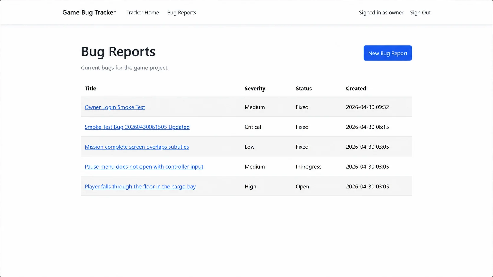
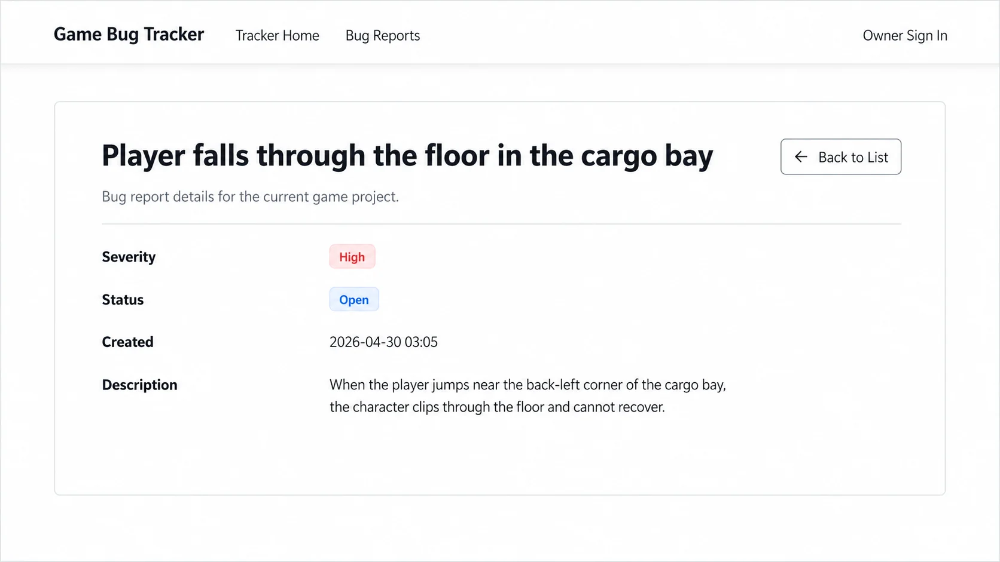
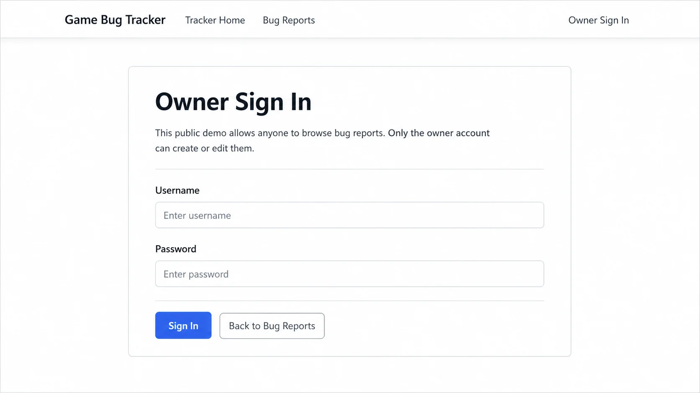

Tooling / workflow mission
Game Bug Tracker
A public-demo-safe ASP.NET Core bug tracker for game production workflows. Built with Razor Pages, EF Core, SQLite, and owner-only write access.
C#
ASP.NET Core
Razor Pages
EF Core
SQLite
Bootstrap
Project Summary
Game Bug Tracker is a portfolio project built around a practical game-production workflow instead of a generic dashboard. The app allows public browsing for recruiters and interviewers while protecting create and edit actions behind owner sign-in. It demonstrates page-driven ASP.NET Core development, EF Core persistence, validation, migrations, and deployment-aware configuration.
Key Highlights
- Public home, bug list, and bug details pages
- Owner-only create and edit flows
- Validation for required titles and descriptions
- EF Core migrations and SQLite persistence
- Automatic seeded demo data for first-run usability
- Public repository with environment-based secret handling
Selected Screens
Click any screenshot to expand it for a closer look.



Architecture and Access Model
- Built with ASP.NET Core Razor Pages for a clear page-driven workflow
- EF Core manages persistence and schema changes through migrations
- SQLite keeps Version 1 lightweight and easy to demo
- Cookie authentication protects create and edit actions
- Owner credentials come from environment configuration, not source control
- Seeded startup data prevents an empty first-run experience
Next Steps
- Search and filtering
- Player-submitted bug reports
- Comments or activity history
- Screenshot attachments
- Hosted database for broader deployment